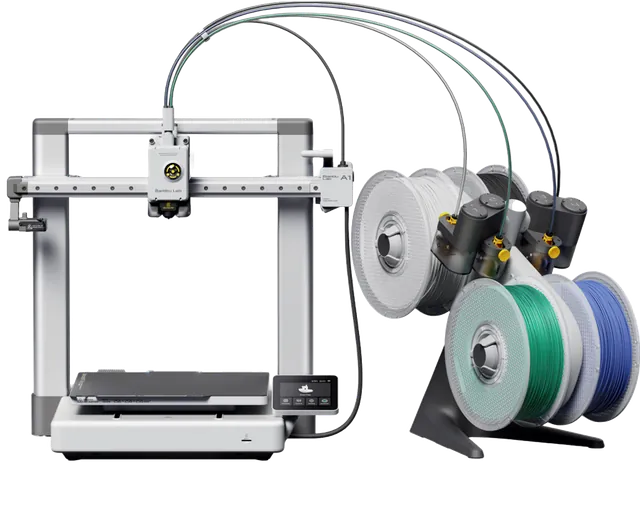
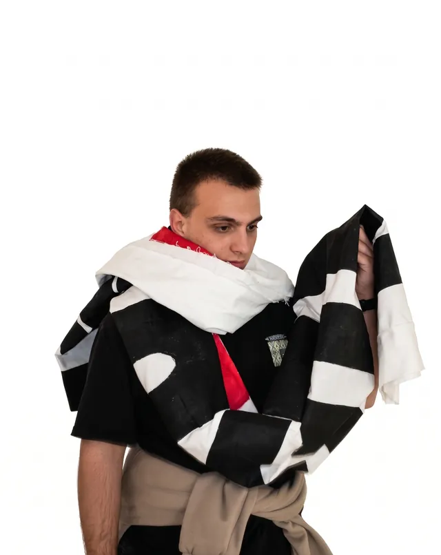

LUCA TOMASELLI
I model
things.
CAD & 3D printing on one side, AI-built games and tools on the other. Products, type and a lot of prototypes in between.
Scroll ↓I study design at the Free University of Bozen-Bolzano. Two things keep me up at night: modelling objects in CAD and watching them come off the printer, and building software with AI — games, tools, small programs that fix my own problems.
CAD Lab
Drawing 3D CAD, WUP 2025/26. Fifteen objects across two semesters — modelled, rendered and staged as ad campaigns. Hover a poster to see the model.
Made by hand
Product and typography projects from university — things you can hold.
Scuola Open Source
Summer programmes in small Italian towns. I build the digital bit: a game for one village, a poster tool for another.
Tools I needed
When I need something, I build it — with AI as the pair programmer. Everything runs in the browser.
Layer by layer
The test print every 3D printer owner knows. Spin it, slice through its 240 layers, or press print and watch it grow.
Drag to rotate · drop an STL to print yours

CAD → print
Most evenings the printer is running. For now I mostly print other people's files — the next step is printing my own: parts modelled from scratch, tested, fixed, printed again.
AI → software
I use AI to go from idea to working thing fast: games, the tools above, small programs. I like to understand what it writes, so every project teaches me a bit more code.
Currently: learning to design for print — tolerances, overhangs, and why the first layer is everything.

Ciao, I'm Luca.
I'm a design student at unibz in Bolzano. I like knowing how things are made, so I make them: in cardboard, in silicone, in Rhino, in code.
My favourite place is the gap between the screen and the object — a model that turns into a print, an idea that turns into a tool someone actually uses.
- Study Design & Art, unibz
- CAD Rhino · Grasshopper
- Make 3D printing · model making
- Code Web apps · games · AI
Got an idea, a project, or a file to print?
SAY CIAO ↗